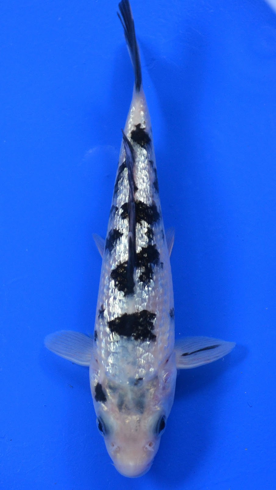
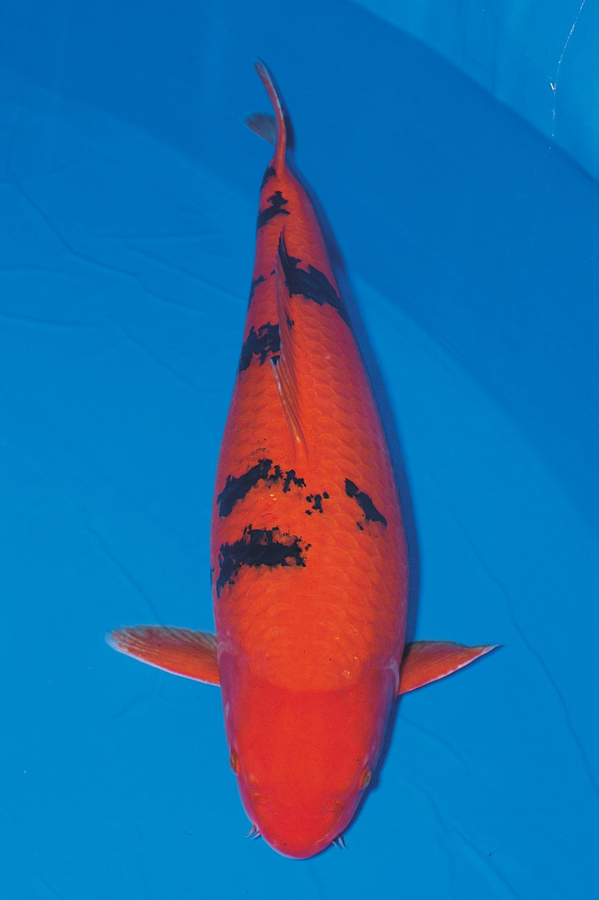
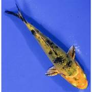
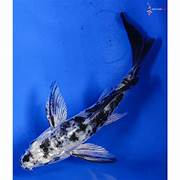

Koi Bekko được ví như bản giao hưởng đầy màu sắc khi được kết hợp giữa màu đỏ-vàng-trắng. Nhiều người chơi Koi Nhật lâu năm thường nhầm lẫn giữa koi Bekko và Koi Utsuri bởi cả hai loại đều sở hữu những chấm đen (điểm xuyết) trên thân.
Koi Farm Shop cam kết 100% Koi đều có giống F0 và F1 với nguồn gốc từ những trại cá nổi tiếng của Nhật Bản, thuộc dòng Koi tuyển với tỷ lệ 300/10000 (cứ 10000 Koi thì lấy 300 Koi), quy trình tuyển chọn vô cùng khắt khe, bảo hành trên từng em Koi. Sẵn sàng cung cấp hình ảnh, video từng chi tiết nhỏ nhất, đền bù gấp 10 lần so với giá trị cá. Ngoài ra, chúng tôi còn nhận KÍ GỬI-ĐẤU GIÁ Koi dành cho khách hàng có nhu cầu.
Bekko được lai tạo trong quá trình nhân giống Taisho Sanshoku từ một nhà lai tạo cá Koi Nhật Bản tại trang trại cá Koi Kloubec cách đây khoảng 30 năm trước. Do đó, Bekko có Sumi (màu đen) tại vùng đầu khá giống với Taisho Sanshoku.
Banner 1: Koi Bekko – Bản giao hưởng đầy màu sắc
Bekko được nhóm theo màu da thành Shiro (trắng) Bekko, còn gọi là (đỏ) Bekko và Ki (vàng) Bekko. Ngày nay, chúng ta hiếm khi bắt gặp Ki Bekko, và Aka Bekko dường như rất ít. Theo đó, chúng ta có thể giả định một cách hợp lý thuật ngữ “Bekko” thường được sử dụng để chỉ Shiro Bekko.
Cả Shiro Bekko và Shiro Utsuri chỉ có các vạch đen và trắng, màu trắng của Koi Bekko phải là màu trắng sữa để làm nổi bật Sumi. Tuy nhiên, phần màu trắng này đặc biệt rất dễ bị đổi màu hổ phách.
Những em Koi Bekko với những vệt đen tuyền trên làn da trắng sữa bao phủ toàn bộ cơ thể trông đẹp tinh tế, rất khó tả, càng ngắm càng thấy yêu hơn những em này.
Koi Bekko mang đầy đủ các đặc điểm của Koi Nhật Bản với mắt to, mình tròn, có thể quan sát được phần mũi và sợi râu dưới miệng. Tuy nhiên, Koi Bekko thường sở hữu xu hướng bụng và vai tròn trịa hơn, râu cũng dài và to hơn.
Tại phần vây của Koi Bekko thường xuất hiện một số chấm nhỏ màu đen (sumi), chiếm tỷ lệ khá nhỏ (chỉ khoảng dưới 10%) so với màu nền toàn thân của Koi. Đồng thời, Bekko rất khác với những em Koi khác, đó là có thể nhìn được xương vây mà không cần phải quan sát kỹ.
Banner 2: Tổng thể của Koi Bekko là khối màu sắc bắt mắt
Phần đầu của em Koi Bekko thường không xuất hiện chấm đen (sumi), thay vào đó, những chấm này phân bố chủ yếu đồng đều trên lưng của cá. Phần bụng dưới của Bekko cũng không có.
Là dòng Koi trắng với những mảng chấm đen, Sumi trên Shiro Bekko phải được cân đối và có cạnh sắc. Có một thời điểm, người ta thường rất khó để phân biệt giữa Shiro Bekko và Shiro Utsuri nhưng sự khác biệt lớn nhất ở đây là Shiro Utsuri có những mảng đen khá lớn. Trong khi đó, Shiro Bekko chỉ có những mảng nhỏ giống như bản vá lỗi của màu sắc. Đầu của Shiro Bekko rất sạch, không có chấm đen nào.

Không bao giờ được gọi là Hi Bekko, là loại Aka Bekko Koi đỏ với các dấu hiệu nhận biết Sumi của Koi Bekko. Lý tưởng nhất là cơ thể của Aka Bekko phải có màu đỏ tươi, được phủ bằng Sumi sâu và màu vây trắng tinh khiết hoặc rõ ràng, tạo nên hiệu ứng khá nổi bật.
Ki Bekko là Koi hiếm nhất trong số giống loài Koi Bekko và sở hữu thân hình màu vàng chanh phủ lên Sumi. Chúng có thể được lai tạo từ Shiro Bekko, Kigoi hoặc Sanke tạo nên màu sắc rất đặc biệt.
Doitsu Bekko là giống Koi cực hiếm hoặc không phổ biến, có những đặc tính vốn có của Koi Bekko. Màu trắng tinh trên mình chúng kết hợp với các đốm đen Sumi khiến chúng trở lên trông giống những con bò sữa biết bơi.
